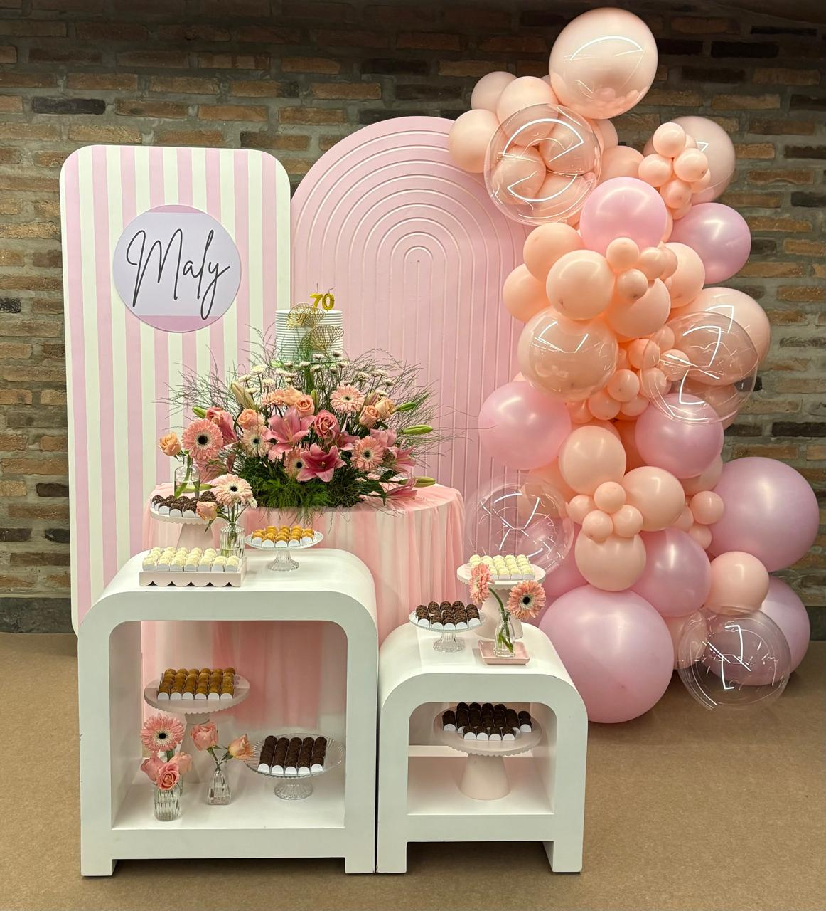
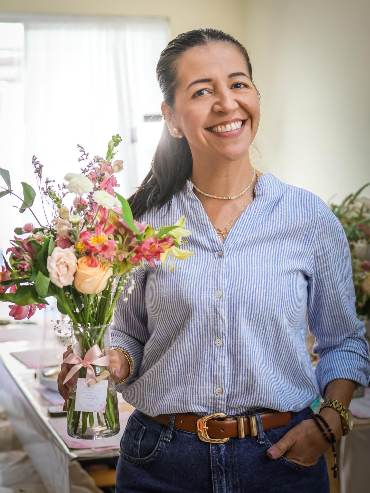

Atendimento personalizado
Cada cliente possui uma história e um estilo. Por isso, cada projeto é pensado individualmente.
Cada celebração merece uma decoração especial. Criamos ambientes personalizados para transformar sonhos e ideias em momentos únicos.


Aline AntunesQUEM ESTÁ POR TRÁS DE CADA DETALHE?
Trabalho com decoração de festas desde 2015 e, ao longo desses anos, fui me especializando em arranjos florais, balões e, principalmente, no cuidado e atendimento aos meus clientes.
Sou casada com o Thales e mãe de dois filhos, Pedro Henrique e Daniel. Minha família é minha base e faz parte de tudo o que construí ao longo da minha trajetória
Sou formada em Gestão de Eventos e, além da decoração, também atuo com assessoria e coordenação de eventos, ajudando a transformar cada celebração em uma experiência organizada, leve e especial.
Também tenho a alegria de compartilhar meus conhecimentos: já ministrei dois workshops de arranjos florais, levando para outras mulheres um pouco da experiência e da paixão que construí ao longo desses anos.
Meu propósito é transformar momentos importantes em memórias inesquecíveis, unindo criatividade, cuidado, harmonia e atenção aos detalhes. Para mim, cada evento conta uma história — e é uma alegria poder fazer parte dela.
“Cada detalhe conta uma história.”
COMPARTILHANDO EXPERIÊNCIAS
Momentos de aprendizado, criatividade e troca de experiências para quem também ama transformar detalhes em arte.
PORTFÓLIO
Uma pequena seleção de eventos para você conhecer um pouco do nosso trabalho.
MAIS INSPIRAÇÃO
Confira todos os eventos e conheça mais detalhes dos nossos trabalhos.
UM JEITO ESPECIAL DE FAZER
Cada cliente possui uma história e um estilo. Por isso, cada projeto é pensado individualmente.
Ideias transformadas em ambientes únicos e cheios de personalidade.
Pequenos detalhes fazem toda a diferença no resultado final.
Compromisso e dedicação em cada etapa do projeto.
DEPOIMENTOS
VAMOS CONVERSAR?
Tem uma festa chegando? Conte um pouco sobre sua ideia e vamos transformar esse momento em uma decoração inesquecível.
Falar pelo Email →Falar pelo WhatsApp →